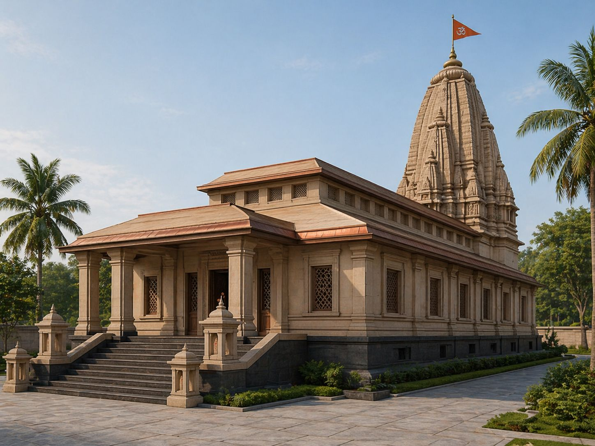
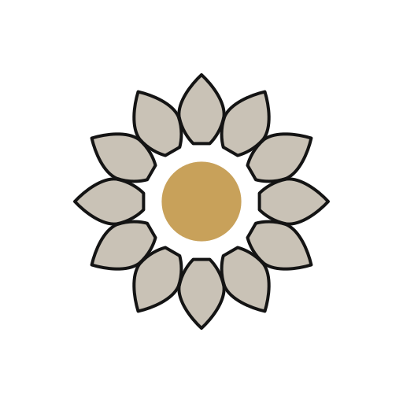

You meet a mandir by walking around it, keeping it to your right. So the page does the same: the passage below moves only clockwise — east, south, west, north — and ends at the threshold.


render crops for layout — site photographs replace these as nirmāṇa proceeds
on a phone, the walk is a swipe; the direction rule holds